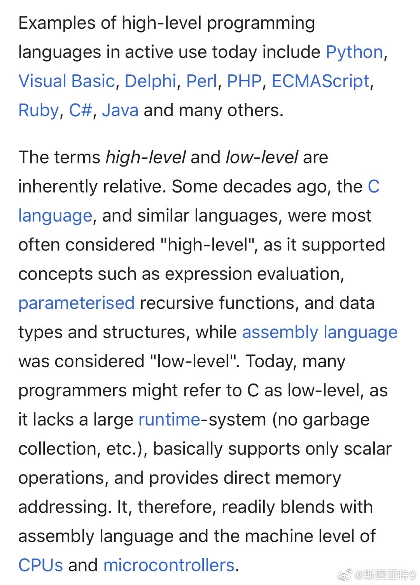

孙杨的官司怎么判不好说，但官司怎么样是一回事，毕竟涉及采血样的程序问题。但他用没用兴奋剂这件事，真的愿意理性思考的人，心里应该都有一杆秤了吧。我们来想一想，孙杨知道这是真实的国际反兴奋剂组织检测员，他甚至认识检测官本人。检测官甚至还当即和瑞士总部联系过，孙杨就在场，他知道这是完全官方授权的。按理说，虽然你资质有问题，也许在程序上有质疑的可能性，但把血抽走就没事了，然后按照检测官的建议，立刻送到反兴奋剂组织官方认证的实验室。这是有什么风险吗？没有。但是他不惜各种麻烦，大半夜耗上几个小时，还半夜把队医叫来、请示了领导，这本身就是对他自己生活和训练很大的干扰。只算当天那一折腾，都是不值得的。而且放在大背景下，他本来就是个有禁药的人前科的人，正常逻辑应该夹着尾巴做人。他知道他拒检的结果必然是闹成现在这样，各种媒体、官司的干扰，还有禁止参赛的风险，国际品牌的广告代言基本上不要想了。损失很大。如果孙杨、他的队医、他的领导是个有点理性思考的人，配合检测还是不配合，两个选择的利弊似乎差了不止一个数量级。在这种情况下，依然拒绝了省事的选择，选择了非常麻烦的。原因是什么？我想大家心里应该有个判断吧。官司不好说，但在国际舆论上，看不出孙杨翻身的可能性。

斯图亚特9
2019-12-05
斯图亚特9
2019-12-05
不小心发现自己成了恐龙时代的人：我直到今天还认为C语言算高级语言。看维基百科才发现，很多程序员已经把C这个级别的语言都归为低级语言了！
- 